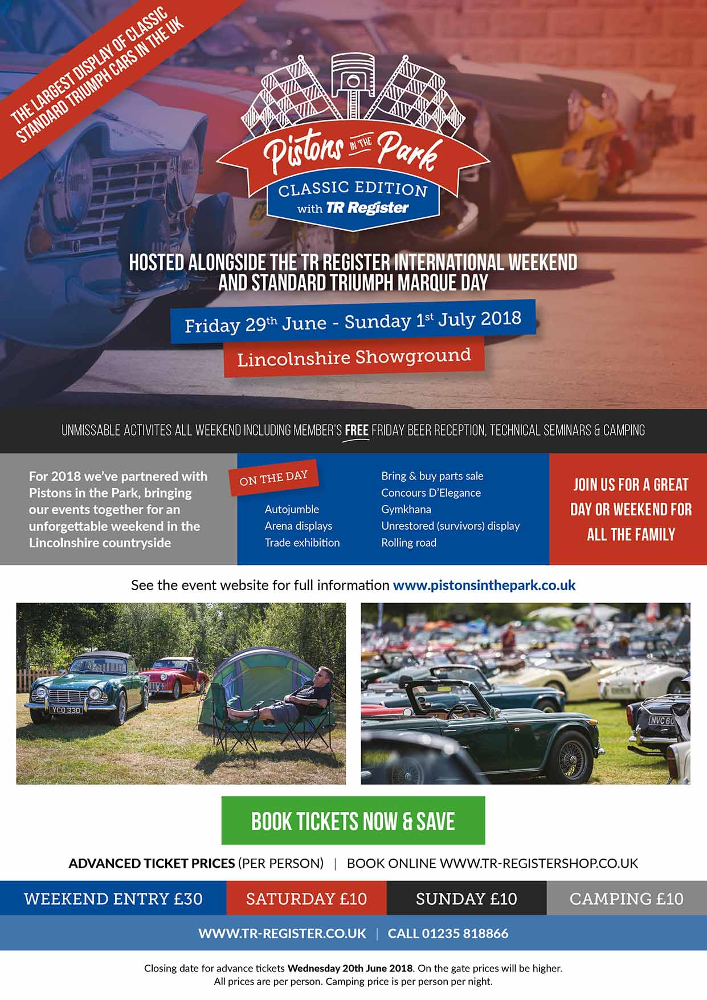

Pistons in the Park
A great day out at the Lincolnshire Showground
· 7th May 2018
The TR Register International Weekend and Standard Triumph Marque Day have been combined this year to create a great-looking event, ‘Pistons in the Park’ – a multi-marque show, with lots of added attractions for the general public. These will include live music, local food, local motor clubs and of course a good smattering of supercars. This will not only be an ideal way to show off Triumphs and Standards to an entirely new audience, but it will also be the biggest show that Mayflowers have taken part in for years, with lots to keep the family amused.
The weekend starts on Friday 29th June and continues until Sunday 1st July.
In addition to the main event, Blyton Park track day is also open to all Triumph club members on the Friday 29th June, and is just 20 minutes up the road.
Hopefully the TMC will be represented by as many members as possible, with or without cars. The club will have its gazebo, regalia and sparkling company on offer! The organisers say there is plenty of room for Mayflowers, and can provide overspill if required.
Lastly, this is a weekend event (with free beer on Friday night!!) so why not come and stay? Camping is available at the site, and there are many hotels in Lincoln.
Discounts apply for advance booking until 20th June, via tr-registershop.co.uk, so don't delay!
Important: Before buying tickets, talk to John Castle!